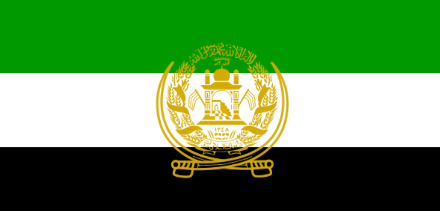
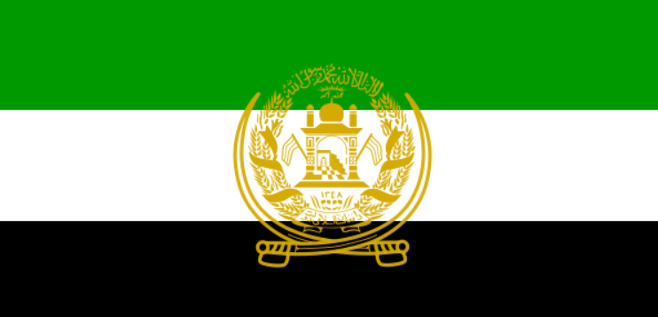

Afghan-USSR Military Map 
Afghan-USSR Military Map 
27 декабря 1979 года состоялась успешная операция сил специального назначения - отрядов «Гром» и «Зенит» КГБ СССР (спецназ «Альфа» и «Вымпел»). Операция началась с высадки в аэропорту Кабула. Одна группа направилась в город, другая - к дворцу. Здание дворца было построено в форме буквы «П» и охранялось со всех сторон. Хоть подход к дворцу был замечен, спецназ был готов к бою. Боевые машины с десантом начали атаку. Вскоре второй этаж загорелся. Бойцы продвигались вперед, используя гранаты и огонь. Противник был быстро уничтожен. Амин погиб в результате взрыва. После боя оставшиеся силы сдались. В результате пятеро спецназовцев и девять десантников погибли, 338 человек были ранены.
«Кунарская операция» 1985 г. считается одной из самых крупных общевойсковых операций в ходе войны в Афганистане. Было решено очистить провинцию от бандитов. «Душманы» знали, что батальон пойдет тут в определенный день и устроили засаду. Подразделение преднамеренно вывели на засаду проводники, которых дало командование. Имело место предательство, в результате которого погибло 22 человека. Несмотря на это провинция была полностью разблокирована, а путь к ней уже контролировали советские заставы и блокпосты. Противник потерял убитыми более 4200 человек. Было захвачено и уничтожено более 100 артиллерийских орудий и минометов, около 200 крупнокалиберных пулеметов, более 160 различных складов.
Операция «Западня», стала самой успешной боевой операцией за всю историю Афганской войны. Наземный этап начался 21 августа: более тысячи десантников, переброшенных на территорию аэродрома «Герат», высадились на небольшом плато. Несмотря на пятидесятиградусную жару, перебои с обеспечением, продовольствием и водой, а также шквальный огонь, открытый боевиками, операция завершилась взятием укрепрайона «Кокари-Шаршари». База афганских моджахедов была полностью зачищена к 26 августа. Итогом операции «Западня» стал разгром многочисленного чётко организованного формирования моджахедов на западе Афганистана. В боях, со стороны советских войск погиб только один солдат.
Операция была проведена с целью прорыва многолетней военной и экономической блокады округа Хост и срыва плана лидеров вооружённой оппозиции по отторжению округа от государства Афганистан и созданию на данной территории осенью 1987 года независимого исламского государства. Главной задачей стал захват перевала Сатэ-Кандав.Там был мощный укрепрайон. После массированного удара артилерии, подразделения десантников пошли в атаку и захватили считавшийся неприступным перевал. В историю эта операция вошла благодаря подвигу 9-й роты и одноименному фильму. На самом деле 39 бойцов 9-й роты успешно выдержали и массированный минометный обстрел, и несколько атак подразделений противника численностью до 500 человек. В итоге, десантники, в том числе и те, что уже были ранены, сами атаковали противника. Боевикам пришлось отступить.
Вывод советских войск из Афганистана начался 15 мая 1988 года, в соответствии с заключёнными 14 апреля 1988 года Женевскими соглашениями о политическом урегулировании положения вокруг ДРА. СССР обязался вывести свой контингент в девятимесячный срок, то есть до 15 февраля 1989 года, причём половина войск должна была быть выведена в течение первых трёх месяцев, то есть до 15 августа 1988 года.